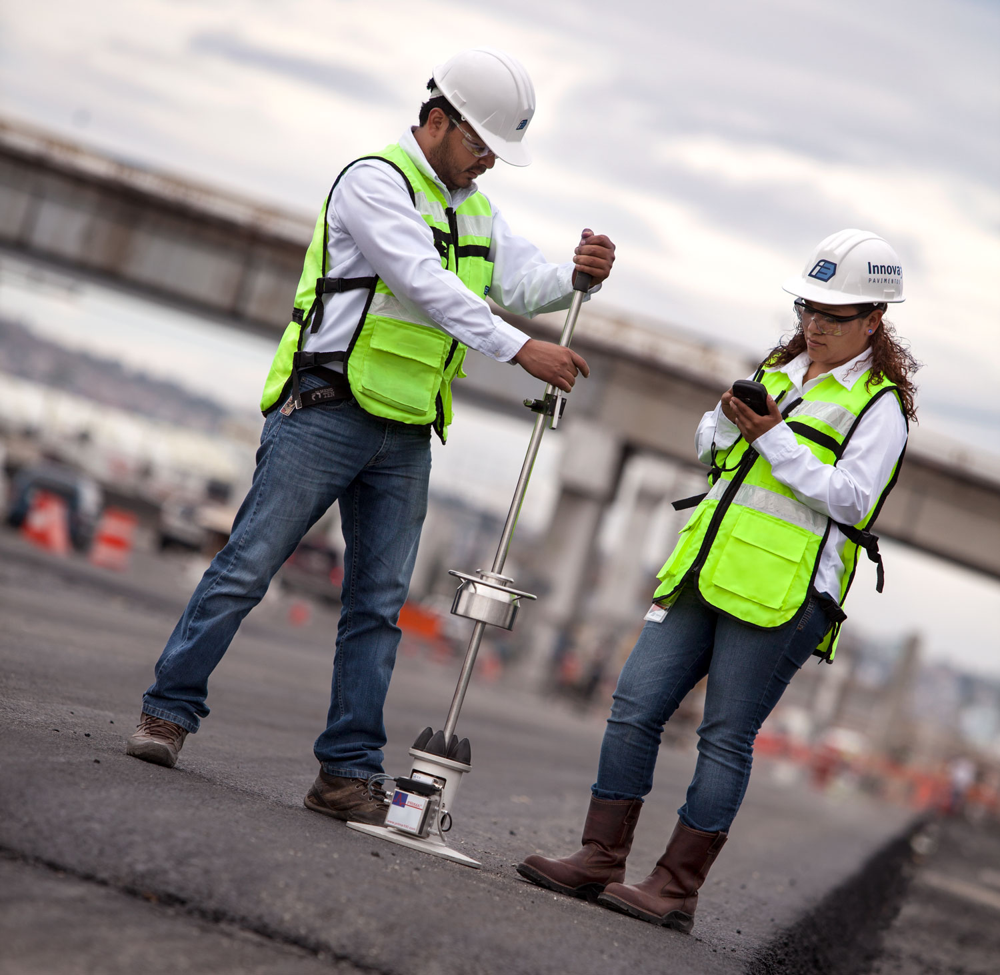
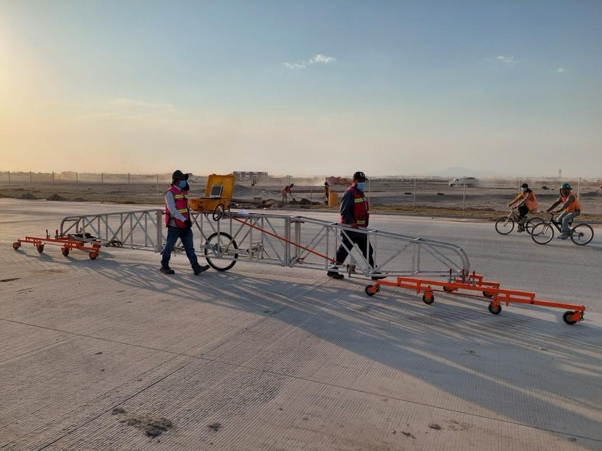
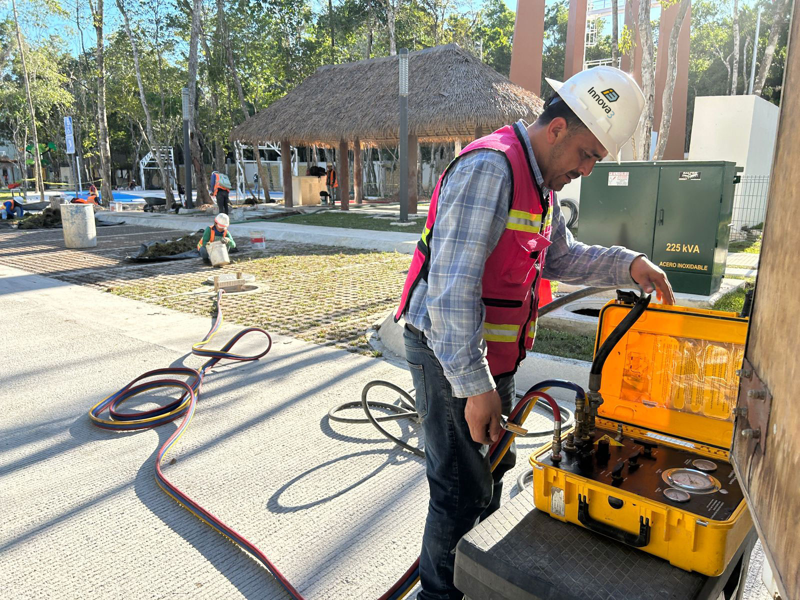
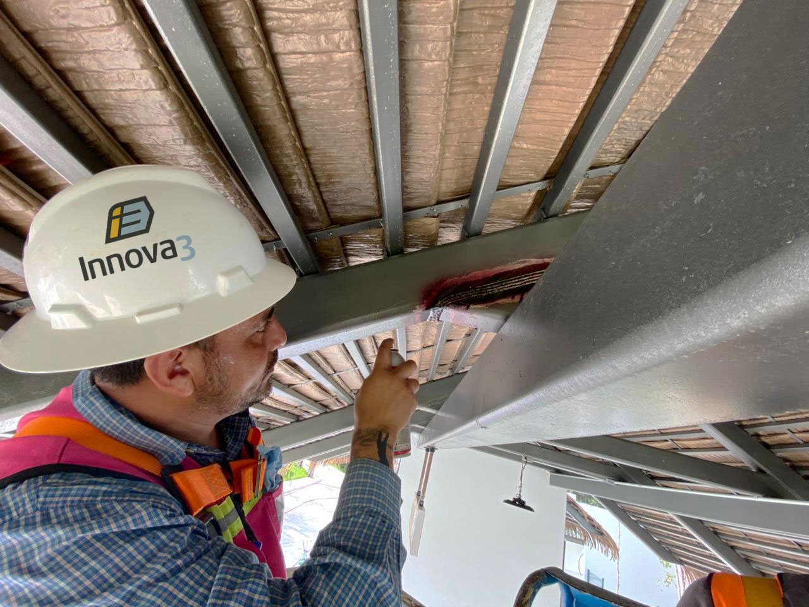
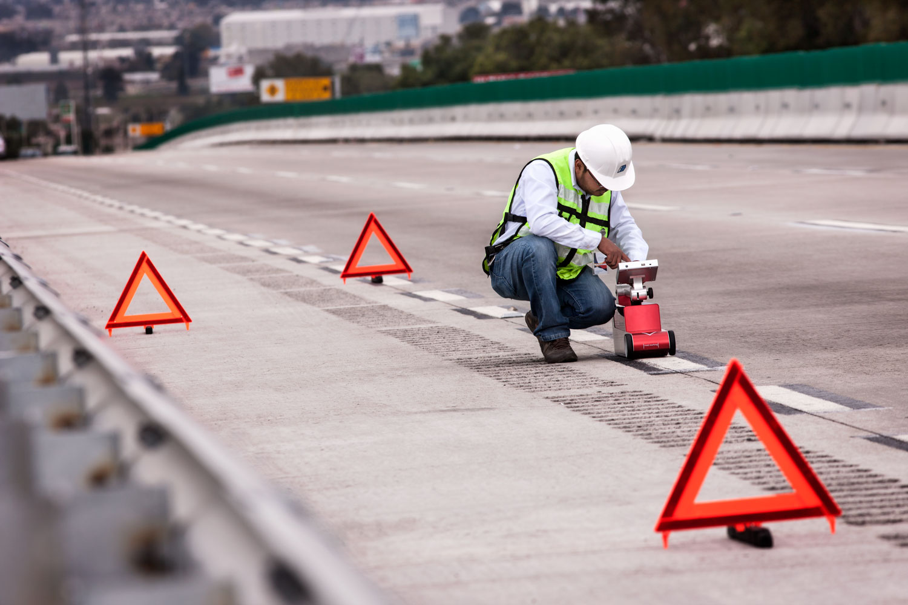

CALIDAD DE MATERIALES
Verificamos que los materiales utilizados cumplan con las especificaciones técnicas del proyecto, proporcionando información confiable para la toma de decisiones y la adecuada ejecución de los trabajos.


PRUEBAS NO DESTRUCTIVAS
- Retroreflexión vertical y horizontal
- Esclerómetro
- Prueba de placa dinámica (LWD)
- Prueba de placa estática
- GeoGauge
- Densímetro electromagnético
CONTROL DE CALIDAD DE LA SUPERFICIE TERMINADA
Índice de Perfil con Perfilógrafo Tipo California (IP)
Evaluamos la regularidad superficial del pavimento, verificando la calidad, cumplimiento normativo y aceptación de obra.

Coeficiente de Fricción (CF)
A través de nuestro equipo Skid Doctor cuantificamos el coeficiente de fricción superficial (μ), un parámetro crítico para la seguridad de la infraestructura vial.


PRUEBAS DE HERMETICIDAD
Verificamos la integridad y estanqueidad de sistemas de drenaje pluvial y tuberías de polietileno de alta densidad (PAD) mediante pruebas de hermeticidad realizadas conforme a la NOM-001-CONAGUA. Nuestro procedimiento permite detectar fugas, deficiencias en juntas y posibles puntos de falla antes de la puesta en operación de la infraestructura.
Mediante equipos especializados de presurización y monitoreo, evaluamos el comportamiento de la tubería bajo condiciones controladas, garantizando que cada tramo cumpla con los criterios de aceptación establecidos por la normativa vigente. Al finalizar, entregamos un informe técnico con los resultados obtenidos y la evidencia correspondiente para el control de calidad de la obra.


BENEFICIOS
- Detección temprana de fugas y defectos constructivos
- Cumplimiento de requisitos normativos y de supervisión
- Mayor confiabilidad y vida útil de la infraestructura
- Reducción de costos asociados a reparaciones posteriores
- Emisión de reportes técnicos para respaldo documental de la obra
OBRA CIVIL
Realizamos trabajos de control de calidad de concretos y metal-mecánica en cualquier tipo de obra civil (casa habitación, nave industrial, etc.)
- Inspección visual
- Líquidos penetrantes
- Ultrasonido

RETROREFLEXIÓN HORIZONTAL
Nuestro equipo de retroreflectancia permite medir el desempeño del señalamiento horizontal en condiciones reales, asegurando que la vialidad cumpla con los niveles de visibilidad nocturna y diurna requeridos.

RETROREFLEXIÓN VERTICAL
Este equipo permite medir la retroreflectancia de señales verticales, asegurando que mantengan niveles adecuados de visibilidad y legibilidad, tanto de día como de noche.